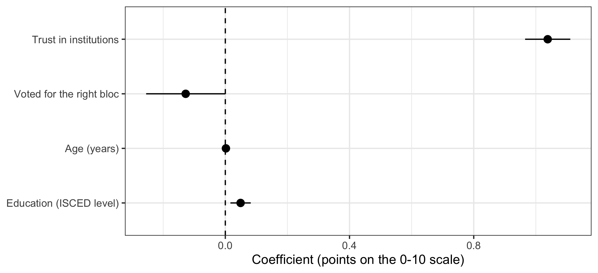
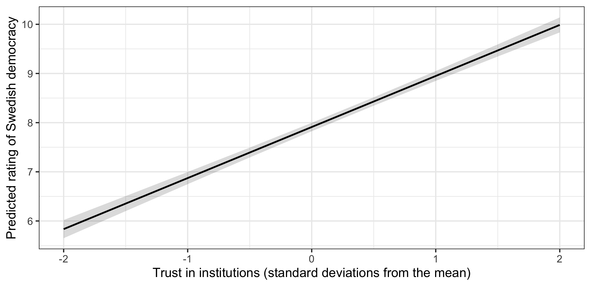

library(ggplot2)
library(dplyr)
library(psych)
library(modelsummary)
library(ggeffects)
swe <- readRDS("data/swe.rds")
trust_items <- c(
"tr_parl", "tr_govt", "tr_court",
"tr_sci", "tr_party", "tr_media"
)
swe$trust <- fa(swe[, trust_items], nfactors = 1, fm = "ml")$scores[, 1]12 Regression: presenting results
You have a model. Now somebody else has to read it.
The raw output of summary() is for you, while you are working. It is not for a reader: it prints things nobody needs, uses variable names instead of words, and gives eight significant digits for a quantity known to one. This session is about the difference.
Three models, of increasing size — which is itself the standard way to present regression results.
model1 <- lm(demlevel ~ trust, data = swe)
model2 <- lm(demlevel ~ trust + bloc, data = swe)
model3 <- lm(demlevel ~ trust + bloc + age + educ, data = swe)12.1 Regression tables
modelsummary() takes a list of models and puts them side by side.
modelsummary(list(model1, model2, model3))| (1) | (2) | (3) | |
|---|---|---|---|
| (Intercept) | 7.812 | 7.909 | 7.534 |
| (0.030) | (0.043) | (0.162) | |
| trust | 1.083 | 1.058 | 1.038 |
| (0.033) | (0.036) | (0.037) | |
| blocRight | -0.118 | -0.128 | |
| (0.064) | (0.065) | ||
| age | 0.002 | ||
| (0.002) | |||
| educ | 0.049 | ||
| (0.017) | |||
| Num.Obs. | 2525 | 2144 | 2097 |
| R2 | 0.301 | 0.303 | 0.310 |
| R2 Adj. | 0.301 | 0.303 | 0.309 |
| AIC | 9299.4 | 7685.7 | 7503.4 |
| BIC | 9316.9 | 7708.4 | 7537.3 |
| Log.Lik. | -4646.703 | -3838.843 | -3745.708 |
| RMSE | 1.52 | 1.45 | 1.44 |
Better than three blocks of summary() output, but not yet publishable. Three things are wrong: the variable names are code, there is more in the bottom panel than a reader needs, and the columns are unlabelled.
labels <- c(
"(Intercept)" = "Intercept",
"trust" = "Trust in institutions",
"blocRight" = "Voted for the right bloc",
"age" = "Age (years)",
"educ" = "Education (ISCED level)"
)
modelsummary(
list("Trust only" = model1,
"Plus bloc" = model2,
"Full model" = model3),
coef_map = labels,
gof_map = c("nobs", "r.squared", "adj.r.squared"),
stars = TRUE,
title = "Evaluations of Swedish democracy (0-10)"
)| Trust only | Plus bloc | Full model | |
|---|---|---|---|
| + p < 0.1, * p < 0.05, ** p < 0.01, *** p < 0.001 | |||
| Intercept | 7.812*** | 7.909*** | 7.534*** |
| (0.030) | (0.043) | (0.162) | |
| Trust in institutions | 1.083*** | 1.058*** | 1.038*** |
| (0.033) | (0.036) | (0.037) | |
| Voted for the right bloc | -0.118+ | -0.128* | |
| (0.064) | (0.065) | ||
| Age (years) | 0.002 | ||
| (0.002) | |||
| Education (ISCED level) | 0.049** | ||
| (0.017) | |||
| Num.Obs. | 2525 | 2144 | 2097 |
| R2 | 0.301 | 0.303 | 0.310 |
| R2 Adj. | 0.301 | 0.303 | 0.309 |
coef_map renames the coefficients and, importantly, also sets their order — anything left out of the map is dropped from the table. Naming the list of models gives the columns headings. gof_map picks which goodness-of-fit rows to keep. stars = TRUE adds significance stars and a footnote explaining them.
The number in brackets under each coefficient is its standard error. Some journals want confidence intervals instead:
modelsummary(
list("Full model" = model3),
coef_map = labels,
gof_map = c("nobs", "r.squared"),
estimate = "{estimate}",
statistic = "conf.int"
)| Full model | |
|---|---|
| Intercept | 7.534 |
| [7.216, 7.851] | |
| Trust in institutions | 1.038 |
| [0.965, 1.111] | |
| Voted for the right bloc | -0.128 |
| [-0.255, -0.000] | |
| Age (years) | 0.002 |
| [-0.002, 0.006] | |
| Education (ISCED level) | 0.049 |
| [0.016, 0.082] | |
| Num.Obs. | 2097 |
| R2 | 0.310 |
statistic controls what goes underneath. "conf.int" gives the 95% interval, which is more informative than a standard error because the reader does not have to do the arithmetic.
Stars or intervals? Stars are conventional and compact, and they encourage exactly the habit session 6 warned against — reading a table for which rows have asterisks. A confidence interval shows the size of the effect and its uncertainty at once. Give intervals where the journal permits it.
To save a table to a file, give output a filename. The format follows the extension.
modelsummary(
list("Full model" = model3),
coef_map = labels,
output = "tables/democracy_model.docx"
).docx, .html, .tex and .md all work. Writing straight into the document you are drafting means the numbers cannot be mistyped on the way — the same argument as inline code in these materials.
You will also meet stargazer, which was the standard for years and appears in a great deal of published code. It still works for
lm(), but it has not kept up with newer model types. Usemodelsummaryfor new work; recognisestargazerwhen you read someone else’s.
12.2 Coefficient plots
A table is precise. A plot is quicker to read, and for a model with many predictors it is much quicker.
modelplot(
model3,
coef_map = rev(labels[-1]),
conf_level = 0.95
) +
geom_vline(xintercept = 0, linetype = "dashed") +
labs(
x = "Coefficient (points on the 0-10 scale)",
y = NULL
) +
theme_bw()
modelplot() comes from the same package and returns an ordinary ggplot, so everything from session 4 applies. labels[-1] drops the intercept, which is not a comparable quantity and would compress everything else; rev() reverses the order, because a plot builds upwards from the bottom while a table reads downwards.
The dashed line at zero is doing real work. Any interval crossing it is a coefficient we cannot distinguish from no relationship.
A question. On that plot, trust has a long bar far from zero and age has a very short bar sitting on it.
A reader might conclude that trust matters and age does not. What else would you need to know before agreeing — and what does the fact that the two variables are on completely different scales do to the comparison?
That question points at a real limitation. The coefficients are in different units — one standard deviation of trust, one year of age, one ISCED level — so their lengths on this plot are not comparable. One fix is to standardise the predictors so that every coefficient is “per standard deviation”:
model_std <- lm(
scale(demlevel) ~ scale(trust) + bloc + scale(age) + scale(educ),
data = swe
)
round(coef(model_std), 3)## (Intercept) scale(trust) blocRight scale(age) scale(educ)
## 0.062 0.517 -0.069 0.019 0.054scale() subtracts the mean and divides by the standard deviation. Now every continuous coefficient is in the same units and the sizes can be compared directly — trust does about twenty times the work of education. The cost is that the coefficients no longer mean anything in the units of the data, which is why this is a supplement rather than a replacement.
12.3 Predicted values
The most useful thing you can show a reader is what the model expects to happen.
predictions <- predict_response(model3, terms = "trust [-2:2 by=0.5]")
predictions## # Predicted values of demlevel
##
## trust | Predicted | 95% CI
## -------------------------------
## -2.00 | 5.83 | 5.65, 6.02
## -1.50 | 6.35 | 6.20, 6.51
## -1.00 | 6.87 | 6.75, 7.00
## -0.50 | 7.39 | 7.29, 7.49
## 0.00 | 7.91 | 7.82, 8.00
## 0.50 | 8.43 | 8.34, 8.52
## 1.00 | 8.95 | 8.85, 9.05
## 2.00 | 9.99 | 9.84, 10.14
##
## Adjusted for:
## * bloc = Left
## * age = 55.50
## * educ = 5.44predict_response() from ggeffects computes predicted outcomes across the range of one variable, holding the others at representative values — it tells you which, underneath the table. terms names the variable to vary, and the bracket notation [-2:2 by=0.5] specifies the values to predict at.
plot(predictions) +
labs(
x = "Trust in institutions (standard deviations from the mean)",
y = "Predicted rating of Swedish democracy",
title = NULL
) +
theme_bw()
The shaded band is the 95% confidence interval around the prediction.
This says the same thing as the coefficient 1.04, but in a form a reader can use: someone two standard deviations below average on trust is predicted to rate Swedish democracy around 5.83, and someone two above at around 9.99.
12.3.1 A warning the model will not give you
Look at the top of that prediction table.
predictions |>
as.data.frame() |>
filter(x >= 1.5) |>
select(x, predicted, conf.low, conf.high) |>
round(2)## x predicted conf.low conf.high
## 1 1.5 9.47 9.34 9.59
## 2 2.0 9.99 9.84 10.14The predicted value at the top of the range is 9.99, and the upper end of its confidence interval is 10.14.
The scale stops at 10. The model has produced a prediction that cannot happen, and it did so without complaint.
This is session 5 arriving in the middle of a regression. OLS fits a straight line, and a straight line does not know that the outcome is bounded. Extend it far enough in either direction and it will predict impossible values — a rating of 12, a negative income, a probability of 1.4.
Three things follow.
- Do not predict outside the range of your data. The model has no information there.
- Check predictions against the limits of the scale, as a matter of routine.
- When a bounded outcome is the whole problem, a straight line is the wrong model. That is what session 15 is about.
12.4 Formatting a table or figure
The rules from session 4 apply, plus a few specific to model output.
- Name variables in words. “Trust in institutions”, not
trust. - Say what one unit is, in the caption or a note. A coefficient without its units cannot be read.
- Round sensibly. Two decimal places is almost always enough.
1.0381823claims a precision that the standard error of 0.04 flatly denies. - Report n for every model, because listwise deletion makes it differ between columns. Ours run from 2525 down to 2097.
- Keep the models in a sensible order — usually simplest first — and keep the coefficient order the same across columns.
- Do not report everything. A table with forty control variables hides the three that matter. Put controls in an appendix and say so.
- Text on a figure should be about the size of the text around it.
How to write it up.
Table 1 reports OLS models of how democratic respondents consider Sweden to be, on a 0-10 scale. Trust in institutions is the dominant predictor: a one standard deviation increase corresponds to a 1.04-point higher rating (95% CI [0.97, 1.11]). Having voted for the right-wing bloc is associated with a 0.13-point lower rating, an estimate that is only marginally distinguishable from zero once trust is accounted for (p = 0.049). Education has a small positive association and age none. The full model accounts for 31.0% of the variance (n = 2097).
Walk the reader through the table rather than repeating it. Mistakes to avoid:
- Reproducing the table in prose. Say what it shows; do not read it aloud.
- Reporting a coefficient without its units or its uncertainty.
- Describing a coefficient whose interval crosses zero as an effect.
- Comparing raw coefficients on different scales as though the sizes were comparable.
- Predicting outside the range of the data, or reporting a prediction the scale cannot hold.
- Giving four decimal places to a quantity with a standard error in the second.
- Reporting a different n in the text than in the table, which is what happens when the table is regenerated and the prose is not.
In the seminar. swirl lesson 12 Regression Presentation. Building a table with several models, renaming and ordering coefficients, coefficient plots, and predicted values. Around 30 minutes.